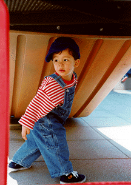

WHERE THE SIDEWALK ENDS
~ Shel Silverstein
There is a place where the sidewalk ends
And before the street begins,
And there the grass grows soft and white,
And there the sun burns crimson bright,
And there the moon-bird rests from his flight
To cool in the peppermint wind.
.
Let us leave this place where the smoke blows black
And the dark street winds and bends.
Past the pits where the asphalt flowers grow
We shall walk with a walk that is measured and slow
And watch where the chalk-white arrows go
To the place where the sidewalk ends.
.
Yes we'll walk with a walk that is measured and slow,
And we'll go where the chalk-white arrows go,
For the children, they mark, and the children, they know
The place where the sidewalk ends.